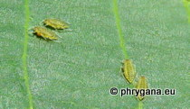

| Phrygana: la Nature en Crète principalement, mais aussi d'ailleurs ... |
|  |
|
|
| Panaphis juglandis | Geum urbanum | Fagus sylvatica 'Aspleniifolia' |
| Espèces: 1341 --- Faune: 535 -- Flora: 781 -- Galles (Bacteria): 2 -- Champignons: 22 -- Lichens: 1 | |||||
| Nouveautés | |||||
| Fauna: | Mormo maura | Flora: | Phytolacca acinosa | Fauna: | Orthetrum cancellatum |
| Fauna: | Columba palumbus | Flora: | Panicum virgatum | Flora: | Albizia lebbeck |
| Flora: | Cymbopogon citratus | Flora: | Hymenocallis littoralis | Flora: | Maytenus octogona |
| 01 mars 2023 |